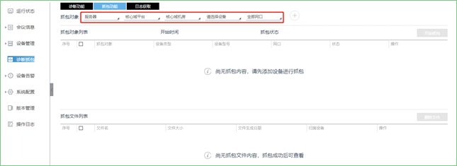
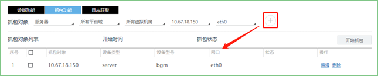
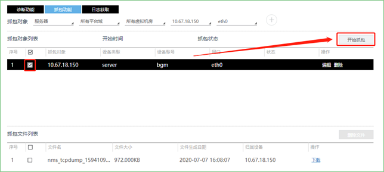

运用抓包功能来查询问题。
具体操作方法如下：
1. 在设备管理>诊断抓包>抓包功能界面；

2. 在抓包对象处选择服务器，选择平台域，选择虚拟机房，选择设备，网口，点击；

3. 勾选抓包对象，点击【开始抓包】，开始抓包，点击【停止抓包】，停止抓包，抓包完成后，点击【下载文件】，将抓包文件保存至本地进行查看。

 编辑：勾选抓包对象，点击右侧的编辑，可修改抓包网口；
编辑：勾选抓包对象，点击右侧的编辑，可修改抓包网口；
 删除：勾选抓包对象，点击右侧的删除，删除该抓包对象；
删除：勾选抓包对象，点击右侧的删除，删除该抓包对象；
删除文件
勾选多个抓包对象，点击【删除文件】，一键删除。